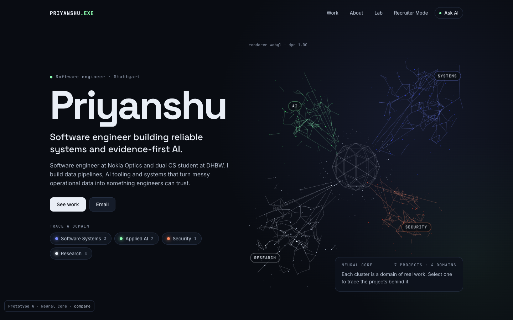
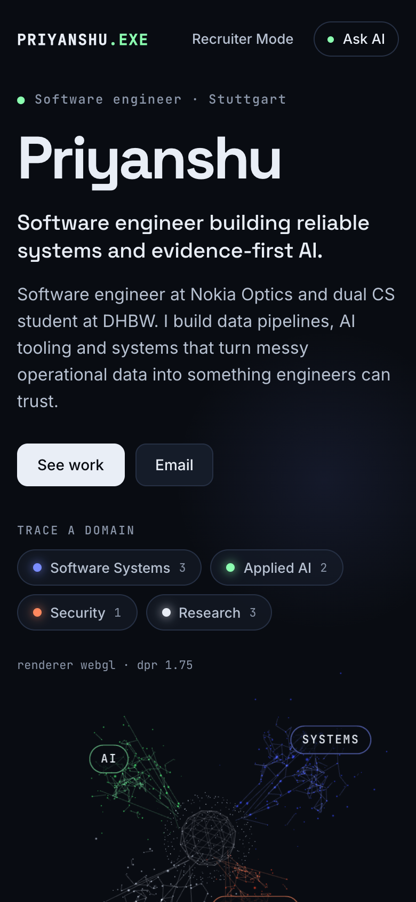
V2 · Phase 1 · Hero direction review
Three isolated, responsive directions built on the same content model, tokens and header. Each one has a reduced-motion path, a no-WebGL or no-dependency fallback and a Recruiter Mode. The copy is always real HTML. Nothing here is deployed or linked from the live site.


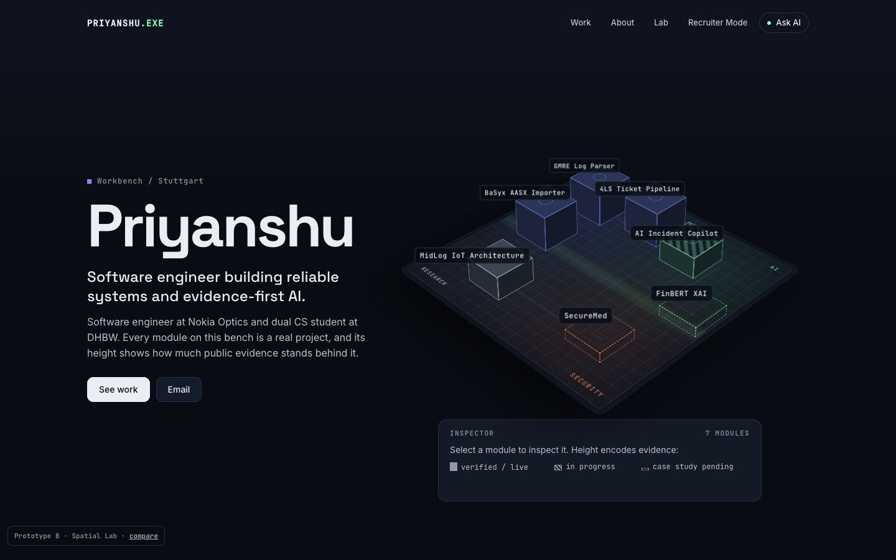
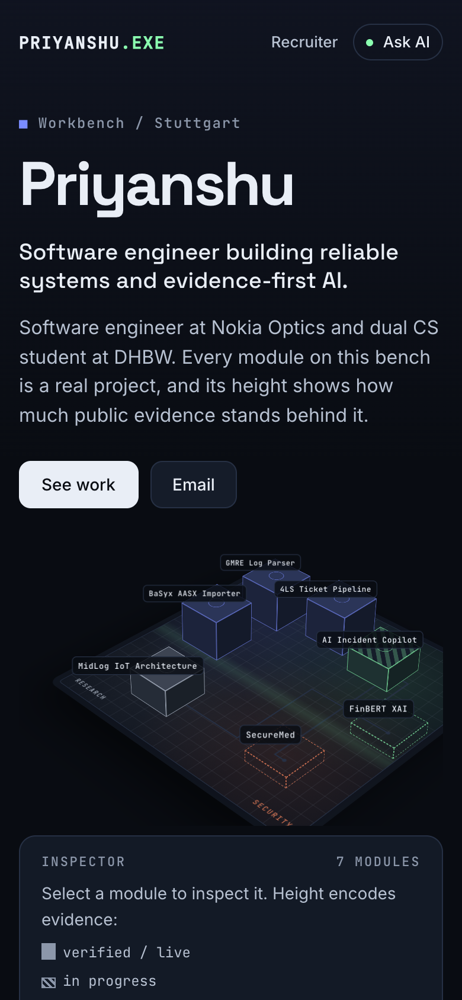
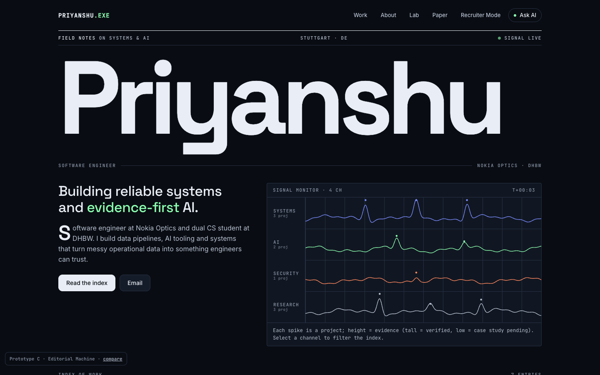
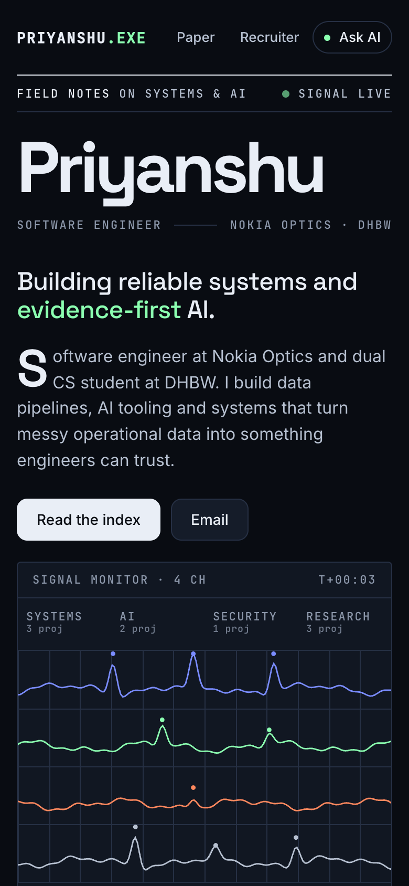
| Criterion (1–5) | A · Neural Core | B · Spatial Lab | C · Editorial |
|---|---|---|---|
| Readability | 4 | 4 | 5 |
| Distinctiveness | 5 | 4 | 3 |
| Mobile performance | 2 | 4 | 5 |
| Implementation cost (5 = cheapest) | 2 | 3 | 5 |
| Accessibility | 4 | 4 | 5 |
| Fit with actual projects | 3 | 5 | 4 |
| Total / 30 | 20 | 24 | 27 |
/work/, and paper Recruiter Mode.This changes plan §5, which lists Neural Core as the MVP hero. It needs explicit approval before Phase 2 starts. Full trade-offs, performance budget and contrast table are in prototypes/hero/README.md.
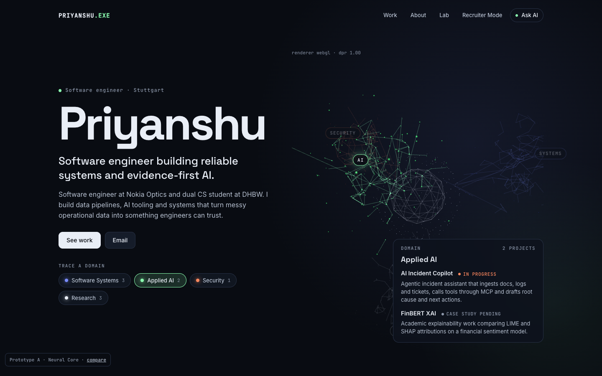
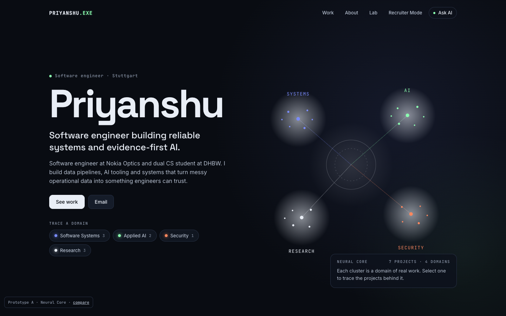
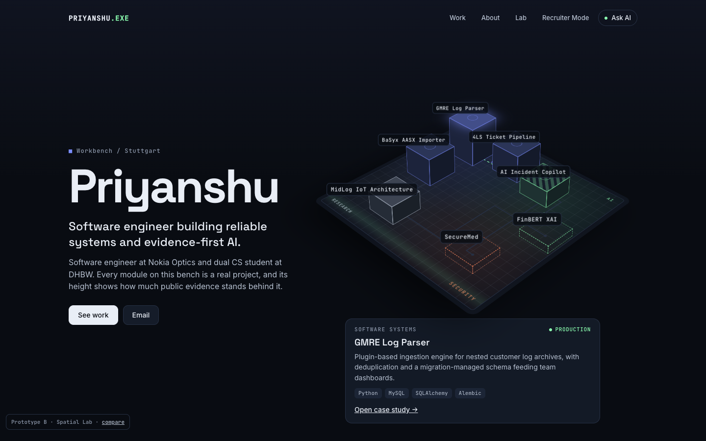
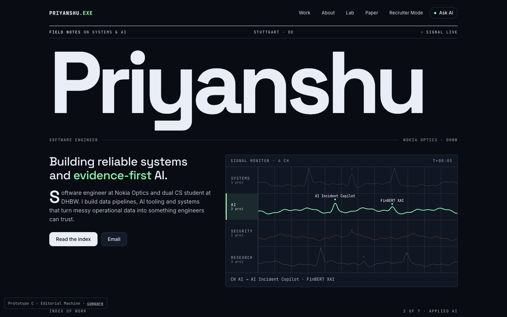
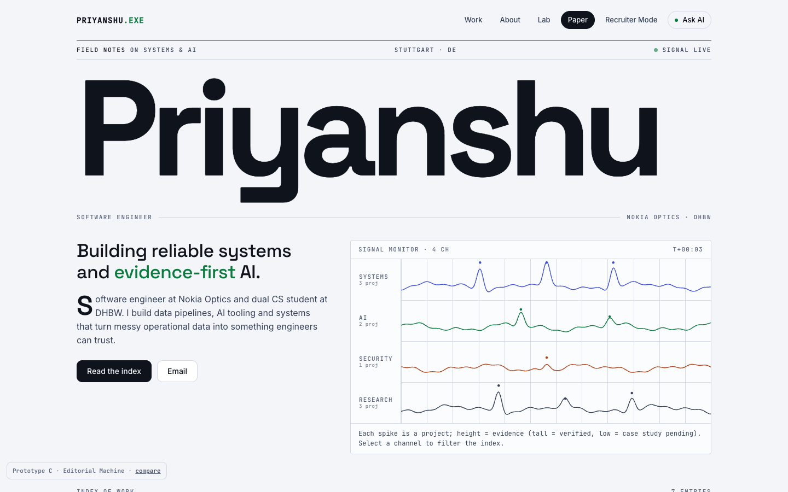
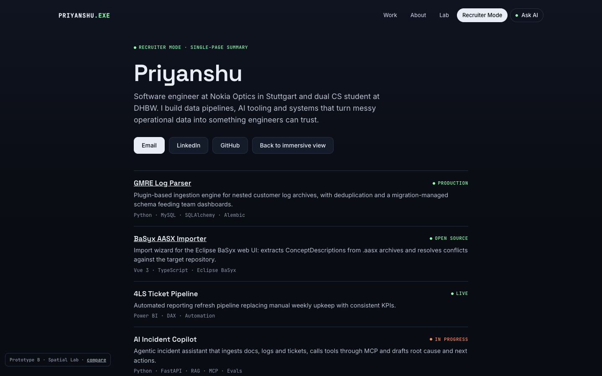
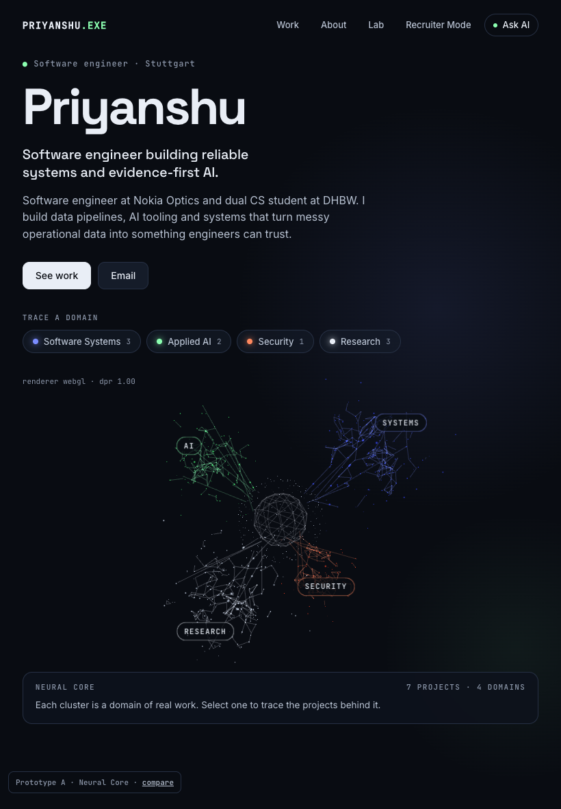